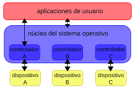

⠀
Los drivers o controladores permiten que el Sistema Operativo (Windows, Linux, etc.) se comunique con el hardware o dispositivos que componen el computador. Sin controladores, el hardware que conecte al equipo (por ejemplo, una tarjeta de vídeo o una cámara web) no funcionará correctamente.funcionan haciendo una abstracción del hardware, de los equipos tangibles, traduciéndolos a una interpretación mediante software.⠀
Los drivers o controladores, son los encargados de actuar como interfaz entre el sistema operativo y los dispositivos que componen un ordenador, es así como todos los componentes se entienden y trabajan conjuntamente. En el caso de una tarjeta gráfica, es el driver el que informa al sistema operativo sobre las distintas resoluciones que soporta ésta, el número de colores, frecuencia de actualización, resolución, etc.⠀
⠀
Tipos de Drivers:⠀
Drivers de audio: Los hay para componentes de audio integrados en la motherboard, módems o tarjetas de sonido independientes. Un ejemplo típico son los drivers de audio.⠀
Drivers de vídeo: También hay drivers para tarjetas de vídeo integradas en la motherboard(tarjeta madre) y para tarjetas independientes. Los drivers de ATI o NVIDIA están entre los más habituales de este tipo.⠀
Drivers LAN o Ethernet: Son los que controlan los dispositivos de red por cable. Drivers Wireless: Estos se aplican a dispositivos o componentes esenciales para las redes inalámbricas como las Wii-Fi o las bluetooth. Drivers USB: Son los que permiten el buen funcionamiento de los puertos USB con los que cuentan todas las motherboard modernas.